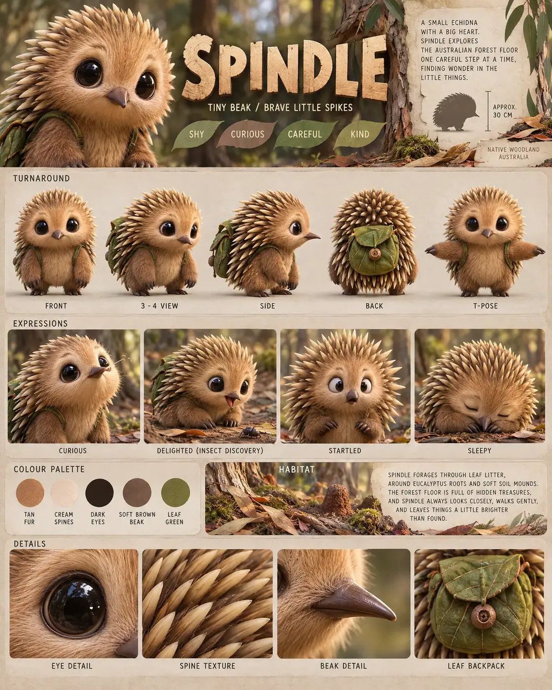

#18 of 100
Spindle
Short-beaked echidna
Forest & MeadowTINY BEAKBRAVE LITTLE SPIKES
- Species
- Short-beaked echidna
- Collection
- Forest & Meadow
- Height
- 30 CM
- Personality
- SHYCURIOUSCAREFULKIND
- Colour palette
- TAN FURCREAM SPINESDARK EYESSOFT BROWN BEAKLEAF GREEN
- Expressions
- curious beak lift
- delighted insect discovery
- startled spiky look
- sleepy tucked face
- Detail panels
- EYE DETAIL
- SPINE TEXTURE
- BEAK DETAIL
- LEAF BACKPACK
- Character note
- Spindle’s careful adventures through the forest floor
Reference sheet prompt
Cute short-beaked echidna named SPINDLE, with oversized black eyes, a tiny pointed beak, warm tan fur, rounded cream-tipped spines, short sturdy legs, and a little leaf-covered backpack. A shy forest forager high-end 3D animated feature reference sheet, portrait 4:5 board, original character, header “SPINDLE” with tagline “TINY BEAK / BRAVE LITTLE SPIKES,” traits “SHY / CURIOUS / CAREFUL / KIND” full-body turnaround — exactly five views: front / 3-4 / side / back / T-pose, identical spine pattern, backpack, beak, and body proportions, clean pose labels row of 4 expressions: curious beak lift, delighted insect discovery, startled spiky look, sleepy tucked face palette swatches TAN FUR, CREAM SPINES, DARK EYES, SOFT BROWN BEAK, LEAF GREEN Australian woodland habitat accents with eucalyptus bark, leaf litter, moss, and tiny soil mounds in the information panels, approximate height “APPROX. 30 CM,” bio about Spindle’s careful adventures through the forest floor bottom macro panels labeled EYE DETAIL, SPINE TEXTURE, BEAK DETAIL, LEAF BACKPACK 8k render, rounded chibi proportions, readable individual spines, no extra animals, no logos